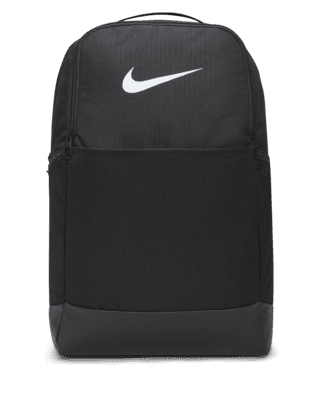
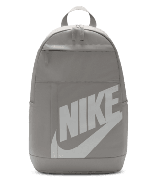
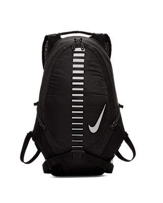

Mochillas

Para los zapatos tenemos a nuestro colaborador especial para eso y es nada mas ni menos que la marca de Nike para los tenis que utilizan nuestros deportistas, para que disfruten de jugar con el mejor equipo posible con la mayor comodidad en sus partidos

Nike Brasilia 9.5
Mochila de entrenamiento (mediana, 24 L)
Toma tu equipo y ponte en marcha con la mochila Nike Brasilia. Tiene un montón de bolsillos para ayudarte a mantener la organización, como una funda que se adapta a tu laptop, bolsillos laterales de malla para botellas de agua y un bolsillo con cierre en la parte interior para mantener seguros los objetos pequeños.
$899

Nike Elemental
Mochila (21L)
La mochila Nike es ideal tanto para los entrenamientos como para ir al trabajo. Un gran compartimiento con cierre ofrece espacio para el calzado o para un conjunto adicional de ropa para el gimnasio, así como para tus libros y tu laptop de la escuela.
$799

Nike Run
Mochila
La mochila Nike, perfecta para los días de carrera, cuenta con un diseño estabilizado que reduce el movimiento mientras corres. Los paneles de malla en la parte posterior agregan transpirabilidad para que puedas correr con comodidad kilómetro tras kilómetro.
$1350